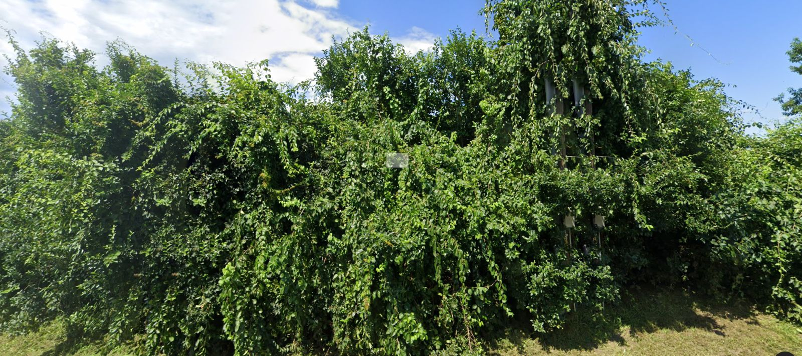

Lead reportBaiting Hollow, RiverheadOct 15, 2026Subdivision target
2706 Sound Avenue
A 13.15-acre lot with a 2001 house in Baiting Hollow, zoned RA-80 (80,000 sq ft lots). Listed at $1,600,000 and the listing expired without a sale or a relist. Under town zoning and the county septic rule it holds 7 house lots. Last deed recorded 2026.
SCTM 0600-04100-0100-003020SWIS 473000 · 41.-1-3.20Riverhead, NY 11901

Street view, Aug 2024, from Sound Ave, facing the lot.
Source: Suffolk County tax map · NYS assessment roll 2025
New houses nearby · the exit
Result
No vacant-to-house conversions within 1.5 miles on the 2021 and 2025 rolls.
Source: NYS assessment rolls 2021 → 2025 (lots vacant in 2021 that carry a house in 2025) · Suffolk County tax map
Splits nearby since 2021 · precedent
Where
Before
After
Built so far
Distance
8 Woodlawn DrRiverhead
1 parcel
4 lots
2 houses · 1 vacant
1.3 mi
Source: NYS assessment rolls 2021 → 2025, parcel split detector (same engine that found Sycamore Estates)
The offer that fits: buy the parcel at land-split value from an owner who already tried to sell, divide it into 7 conforming lots, and sell new houses into a market where new construction on vacant lots nearby carries strong values.
Estimates Lot counts assume the full parcel minus mapped wetlands, before roads and frontage, and need a surveyor's yield map. Owner names are masked; the full record, the phone and the trace are walked through on a call. Pulled Oct 15, 2026 from Suffolk County and New York State public records, town zoning maps and an Oct 4 MLS snapshot.